從光復南路騎樓出發，西側經八德路三段 158 巷轉入 8 弄或 20 弄，東側經八德路四段 72 巷轉入 106 巷的 2、4、6、8 弄。每組的前後實機使用同一座標和朝向，鏡頭離地高度估為 2.45 公尺。外觀依各全景拍攝時可見的細節重建。嘗試走西側時，可從光復南路 6 巷往西，跨過第一個路口後沿 158 巷 7 弄到 158 巷；東側可從光復南路 13 巷或 17 巷向東走到 72 巷。
方位 82° 開啟原位置的 Google 街景 原尺寸對照
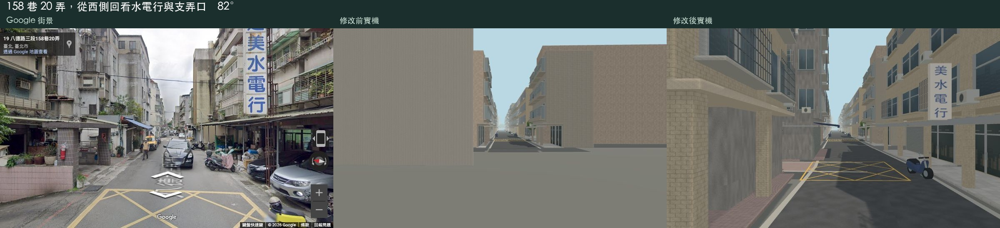
方位 170° 開啟原位置的 Google 街景 原尺寸對照
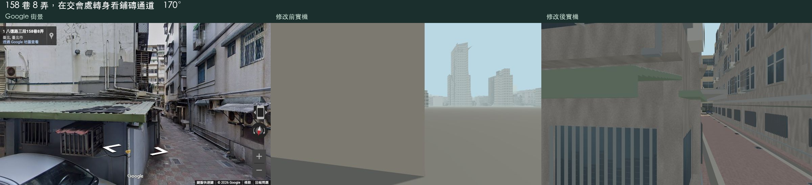
方位 85° 開啟原位置的 Google 街景 原尺寸對照
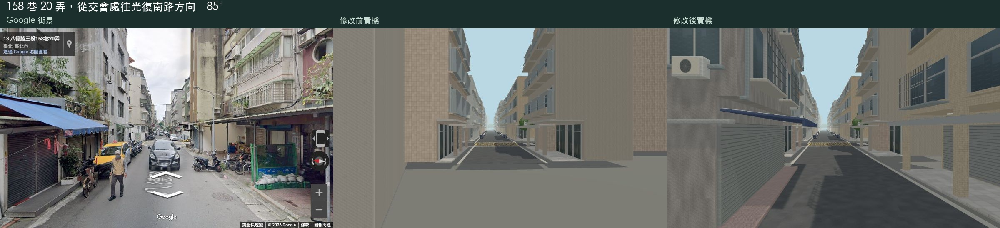
方位 263° 開啟原位置的 Google 街景 原尺寸對照
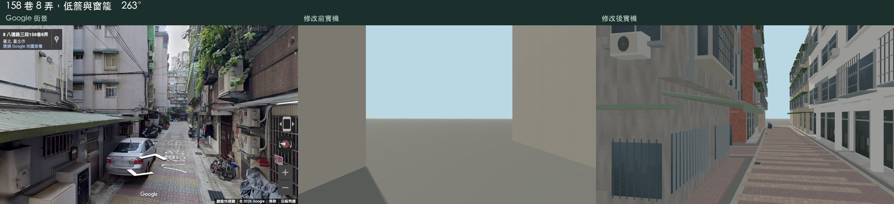
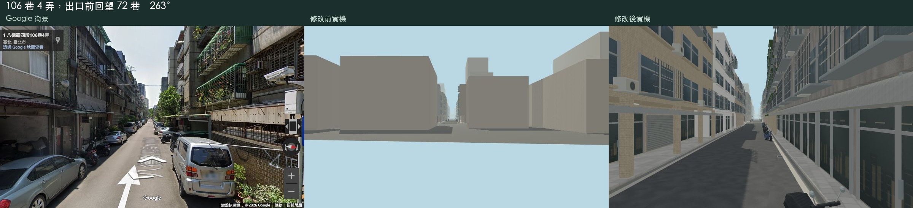
方位 165° 開啟原位置的 Google 街景 原尺寸對照
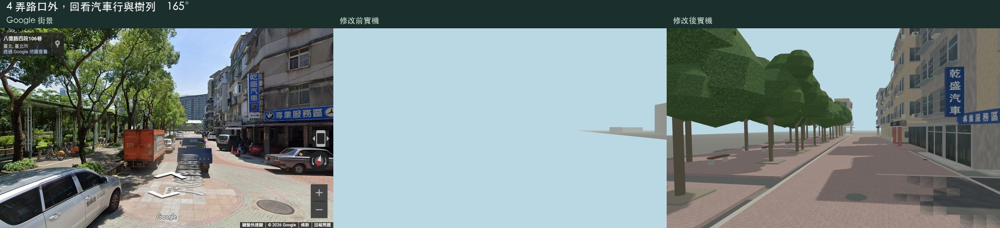
方位 264° 開啟原位置的 Google 街景 原尺寸對照
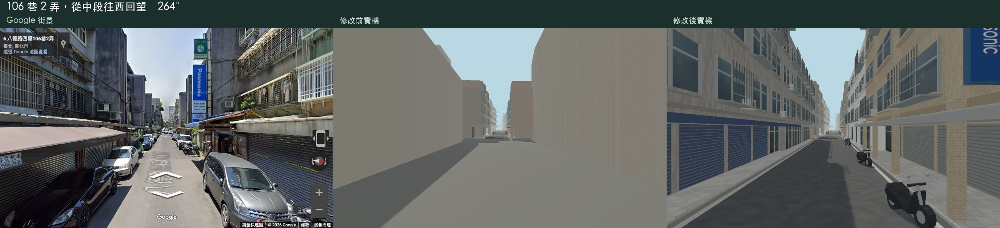
方位 259° 開啟原位置的 Google 街景 原尺寸對照
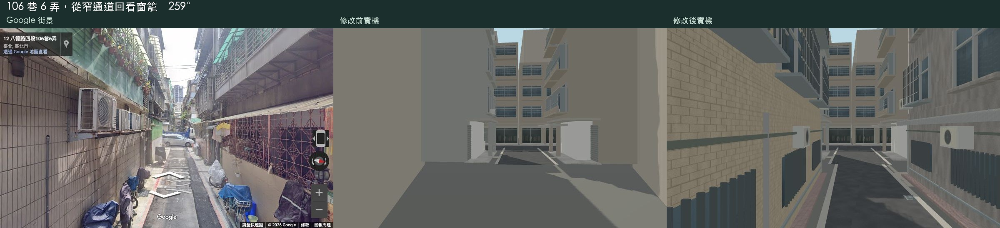
方位 257° 開啟原位置的 Google 街景 原尺寸對照
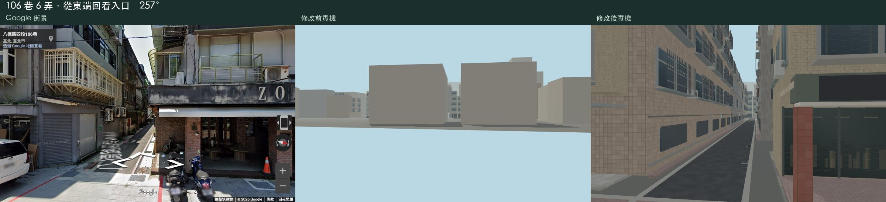
方位 262° 開啟原位置的 Google 街景 原尺寸對照
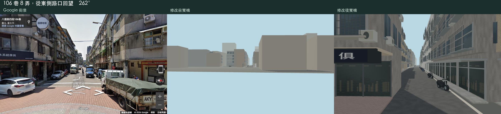
方位 300° 開啟原位置的 Google 街景 原尺寸對照
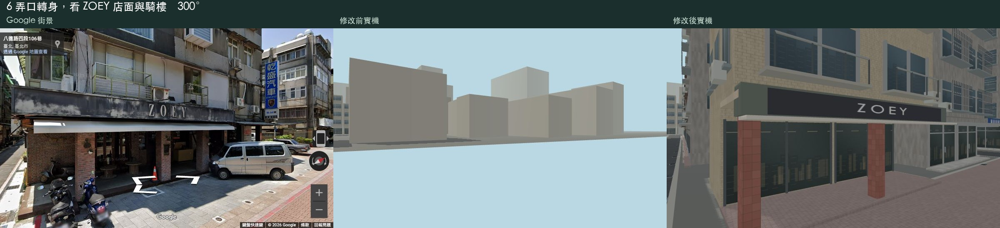
方位 215° 開啟原位置的 Google 街景 原尺寸對照
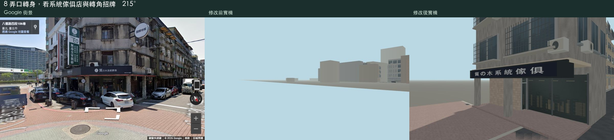